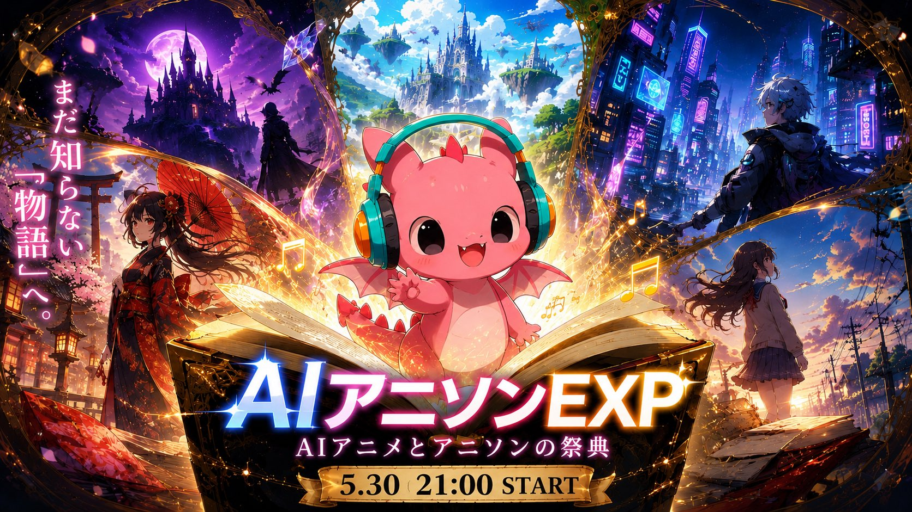

YouTube / Archive
※表示されない場合は、下のリンクからYouTubeでご視聴ください。
Time Table
当日の進行スケジュールです。
Lineup & Setlist
出演クリエイター及び披露楽曲のご紹介
Petit Events
本編とあわせて楽しめる関連企画

AI技術と人の感性が交差する、次世代音楽フェス。
幻想と未来が共存するステージへようこそ。
一夜限りのアニソンフェス、ここでしか聴けない音がある
当日の進行スケジュールです。
出演クリエイター及び披露楽曲のご紹介
本編とあわせて楽しめる関連企画